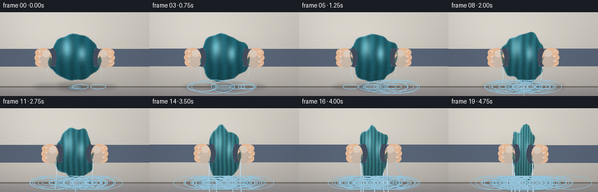
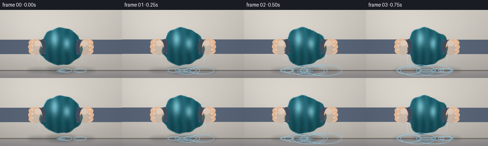

CODING AGENTS AS PIXEL WORLD MODELS
traex/Seed-2.1-Pro-0915 · phygen_012
点击播放 · 原生 RGB 像素
逐轮保存的候选
回放视频、检查图与代码变化。
每份候选均可单独播放。实际图片检查记录在下方工具轨迹中。
候选 01播放与检查图
点击播放 · 原生 RGB 像素


展开代码变化
--- 上一保存版本
+++ 本次保存版本
@@ -0,0 +1,352 @@
+"""Procedural timelapse: a waterlogged soft towel forcefully squeezed by hand.
+
+Renders 20 RGB frames (256x144 @ 4fps) entirely with numpy + PIL:
+two fists compress a wet terry-cloth towel, pressure ramps up over time,
+cloth deforms/crinkles, and water is wrung out as streams, spray, droplets,
+ripples and a growing puddle.
+"""
+import json
+import math
+import pathlib
+
+import numpy as np
+from PIL import Image, ImageDraw, ImageFilter
+
+import artifact_io
+
+# ---------------------------------------------------------------- setup
+CASE_DIR = pathlib.Path(__file__).parent
+SPEC = json.loads((CASE_DIR / "task_spec.json").read_text())
+W, H, N, FPS = SPEC["width"], SPEC["height"], SPEC["frames"], SPEC["fps"]
+
+SS = 2 # supersampling factor
+BW, BH = W * SS, H * SS # big render buffer
+FLOOR_Y = 128 * SS
+CX, CY = 256, int(78 * SS)
+DT = 1.0 / FPS
+
+rng = np.random.default_rng(21)
+XX, YY = np.meshgrid(np.arange(BW, dtype=np.float32),
+ np.arange(BH, dtype=np.float32))
+
+
+def clamp(a, lo=0.0, hi=255.0):
+ return np.clip(a, lo, hi)
+
+
+# ---------------------------------------------------------------- background
+def make_background():
+ """Warm neutral wall, floor band, soft key light from upper left."""
+ top = np.array([216, 211, 202], dtype=np.float32)
+ bot = np.array([176, 171, 164], dtype=np.float32)
+ t = YY / BH
+ wall = top[None, None, :] * (1 - t[..., None]) + bot[None, None, :] * t[..., None]
+
+ # soft key light
+ light = np.exp(-(((XX - 110) / 230.0) ** 2 + ((YY - 60) / 200.0) ** 2))
+ wall += light[..., None] * 14.0
+
+ img = wall
+ # floor: a touch darker and cooler
+ floor_mask = YY >= FLOOR_Y
+ fshade = 0.82 + 0.08 * (1 - (YY - FLOOR_Y) / max(1, BH - FLOOR_Y))
+ floor = wall * fshade[..., None]
+ floor[..., 2] += 6.0
+ img = np.where(floor_mask[..., None], floor, img)
+
+ # baseboard seam
+ seam = np.abs(YY - FLOOR_Y) <= 2
+ img[seam] = (120, 116, 110)
+ return clamp(img)
+
+
+BG = make_background()
+VIGNETTE = 1.0 - 0.10 * np.clip(
+ np.sqrt(((XX - BW / 2) / (BW / 2)) ** 2 + ((YY - BH / 2) / (BH / 2)) ** 2)
+ - 0.55, 0, 1)[:, :, None]
+
+
+# ---------------------------------------------------------------- towel geometry
+RX0, RY0 = 88.0, 80.0
+
+
+def towel_polygon(s, phase):
+ """Crinkly, pinched towel silhouette. s = squeeze amount in [0, 1]."""
+ n = 150
+ th = np.linspace(0, 2 * math.pi, n, endpoint=False)
+ sx = 1.0 - 0.46 * s
+ sy = 1.0 + 0.20 * s
+ # extra pinch where the fists press (near the horizontal equator)
+ pinch = 1.0 - 0.30 * s * np.exp(-(np.sin(th) / 0.55) ** 2)
+ crumple = 1.0 + (0.045 + 0.035 * s) * (
+ np.sin(3 * th + phase) + 0.7 * np.sin(7 * th - 0.7 * phase)
+ + 0.4 * np.sin(11 * th + 1.3))
+ x = CX + np.cos(th) * RX0 * sx * pinch * crumple
+ y = CY + np.sin(th) * RY0 * sy * (1.0 + 0.05 * np.sin(5 * th - phase)) * crumple
+ return list(zip(x.tolist(), y.tolist()))
+
+
+def render_towel(s, phase):
+ """Return (rgba layer, polygon points, equator half-width)."""
+ poly = towel_polygon(s, phase)
+ mask_img = Image.new("L", (BW, BH), 0)
+ ImageDraw.Draw(mask_img).polygon(poly, fill=255)
+ mask_img = mask_img.filter(ImageFilter.GaussianBlur(1.2))
+ mask = np.asarray(mask_img, dtype=np.float32) / 255.0
+ m = mask > 0.5
+
+ sx = 1.0 - 0.46 * s
+ sy = 1.0 + 0.20 * s
+ nx = (XX - CX) / (RX0 * sx)
+ ny = (YY - CY) / (RY0 * sy)
+
+ # water content fades as the towel is wrung out
+ wc = 1.0 - 0.62 * s
+ wet = np.array([24, 82, 94], dtype=np.float32)
+ dry = np.array([74, 132, 134], dtype=np.float32)
+ base = wet[None, None, :] * wc + dry[None, None, :] * (1 - wc)
+
+ # vertical shading: heavier tone toward the lower (wet) edge
+ vgrad = (1.0 - 0.16 * np.clip(ny, -1, 1))[..., None]
+ # cloth folds: more / tighter folds as the cloth bunches up
+ wave = 0.16 * np.sin(ny * 6.0 + phase)
+ k = (5.0 + 6.0 * s) * math.pi
+ folds = 1.0 + (0.09 + 0.13 * s) * np.sin(nx * k + wave * 2.0 + phase)
+ # pressure shadows next to the fists
+ press = 1.0 - 0.28 * s * np.exp(
+ -((np.abs(nx) - 0.85) ** 2) / 0.05 - (ny / 0.7) ** 2)
+ shade = vgrad * folds[..., None] * press[..., None]
+ rgb = base * shade
+
+ # wet specular sheen (stretched soft highlights), fades slightly as it dries
+ sheen = 0.55 * wc + 0.18
+ for hx, hy, hsx, hsy in [(-0.32, -0.42, 0.22, 0.40),
+ (0.28, -0.18, 0.16, 0.30)]:
+ g = np.exp(-(((nx - hx) / hsx) ** 2 + ((ny - hy) / hsy) ** 2))
+ rgb += g[..., None] * np.array([210, 232, 236]) * sheen * 0.55
+
+ # terry-cloth micro texture + faint weave
+ noise = rng.normal(0, 1, (BH, BW)).astype(np.float32)
+ weave = 3.0 * np.sin(XX * 1.7) * np.sin(YY * 1.7)
+ rgb += (noise * 5.0 + weave)[..., None]
+
+ # rim light from the cool key side, warm bounce on the other edge
+ eroded = np.asarray(mask_img.filter(ImageFilter.MinFilter(5)),
+ dtype=np.float32) / 255.0
+ rim = (mask - eroded)[..., None]
+ cool = (np.sign(XX - CX)[..., None] <= 0).astype(np.float32)
+ rgb += rim * (cool * np.array([46, 60, 70])
+ + (1 - cool) * np.array([26, 20, 12]))
+
+ rgba = np.zeros((BH, BW, 4), dtype=np.uint8)
+ rgba[m, :3] = clamp(rgb[m]).astype(np.uint8)
+ rgba[m, 3] = (mask[m] * 255).astype(np.uint8)
+
+ eq_half = RX0 * sx * (1.0 - 0.30 * s)
+ return Image.fromarray(rgba, "RGBA"), poly, eq_half
+
+
+# ---------------------------------------------------------------- water system
+class Water:
+ def __init__(self):
+ self.drops = [] # x, y, vx, vy, r
+ self.ripples = [] # x, r, age
+ self.emitted = 0.0
+
+ def spawn(self, poly, s, wc):
+ n_spawn = int(2 + 18 * s * wc + 7 * s)
+ arr = np.asarray(poly)
+ lower = arr[arr[:, 1] > CY + 10]
+ for _ in range(n_spawn):
+ p = lower[rng.integers(len(lower))]
+ self.drops.append([
+ float(p[0]) + rng.normal(0, 3),
+ float(p[1]) + rng.normal(0, 2),
+ rng.normal(0, 26),
+ rng.uniform(70, 200) + 120 * s,
+ rng.uniform(2.0, 3.6),
+ ])
+ # sideways squirt from the pinch points once pressure builds
+ if s > 0.25:
+ for side in (-1, 1):
+ for _ in range(max(1, int(3 * s))):
+ self.drops.append([
+ CX + side * (RX0 * (1 - 0.5 * s) - 6),
+ CY + rng.normal(0, 14),
+ side * rng.uniform(170, 330) * s,
+ rng.uniform(40, 170),
+ rng.uniform(1.8, 3.0),
+ ])
+ self.emitted += n_spawn
+
+ def update(self):
+ alive = []
+ for x, y, vx, vy, r in self.drops:
+ vy += 1500.0 * DT
+ x2, y2 = x + vx * DT, y + vy * DT
+ if y2 >= FLOOR_Y - 2:
+ self.ripples.append([x2, r, 0.0])
+ continue
+ alive.append([x2, y2, vx, vy, r])
+ self.drops = alive
+ for rp in self.ripples:
+ rp[1] += 95.0 * DT
+ rp[2] += DT
+ self.ripples = [rp for rp in self.ripples if rp[2] < 0.9]
+
+ def draw(self, overlay):
+ d = ImageDraw.Draw(overlay)
+ water = (146, 198, 222, 235)
+ core = (228, 242, 250, 255)
+ for x, y, vx, vy, r in self.drops:
+ px, py = x - vx * DT * 0.6, y - vy * DT * 0.6
+ d.line([(px, py), (x, y)], fill=water, width=max(1, int(r)))
+ d.ellipse([x - r, y - r, x + r, y + r], fill=water)
+ d.ellipse([x - r * 0.4, y - r * 0.4, x + r * 0.2, y + r * 0.2],
+ fill=core)
+ for x, r, age in self.ripples:
+ a = int(150 * (1 - age / 0.9))
+ d.ellipse([x - r, FLOOR_Y - r * 0.32, x + r, FLOOR_Y + r * 0.32],
+ outline=(150, 200, 224, a), width=2)
+
+
+def draw_streams(base, poly, s, wc):
+ """Thin wavy water streams falling from the towel's lower edge."""
+ overlay = Image.new("RGBA", (BW, BH), (0, 0, 0, 0))
+ d = ImageDraw.Draw(overlay)
+ flow = min(1.0, 0.18 + s * (0.5 + wc))
+ n_streams = 2 + int(4 * s)
+ arr = np.asarray(poly)
+ lower = arr[arr[:, 1] > CY + 18]
+ picks = np.linspace(0, len(lower) - 1, n_streams).astype(int)
+ for k, idx in enumerate(picks):
+ x0, y0 = lower[idx]
+ length = (46 + 120 * s) * rng.uniform(0.75, 1.1)
+ pts = []
+ for j in range(7):
+ q = j / 6.0
+ pts.append((x0 + math.sin(q * 5 + k * 2 + s * 4) * 4 * q,
+ y0 + length * q))
+ alpha = int(190 * flow)
+ d.line(pts, fill=(140, 194, 220, alpha), width=4)
+ d.line(pts, fill=(226, 240, 248, min(255, alpha + 30)), width=2)
+ base.alpha_composite(overlay)
+
+
+# ---------------------------------------------------------------- hands
+SKIN = (228, 184, 150)
+SKIN_D = (196, 146, 112)
+SKIN_L = (246, 208, 180)
+SLEEVE = (88, 100, 118)
+CUFF = (66, 76, 92)
+
+
+def draw_fist(base, side, hx, hy):
+ """side = -1: hand entering from the left; +1 from the right."""
+ layer = Image.new("RGBA", (BW, BH), (0, 0, 0, 0))
+ d = ImageDraw.Draw(layer)
+ inward = side # direction toward the towel
+
+ # sleeve + cuff entering from the screen edge
+ wrist_x = hx - inward * 30
+ if side < 0:
+ d.rectangle([-12, hy - 30, wrist_x + 10, hy + 30], fill=SLEEVE)
+ d.ellipse([wrist_x - 14, hy - 32, wrist_x + 14, hy + 32], fill=CUFF)
+ else:
+ d.rectangle([wrist_x - 10, hy - 30, BW + 12, hy + 30], fill=SLEEVE)
+ d.ellipse([wrist_x - 14, hy - 32, wrist_x + 14, hy + 32], fill=CUFF)
+
+ def ell(cx, cy, rx, ry, fill):
+ d.ellipse([cx - rx, cy - ry, cx + rx, cy + ry], fill=fill)
+
+ # palm, knuckle row (toward towel), thumb wrapping underneath
+ ell(hx, hy, 27, 33, SKIN)
+ for i, oy in enumerate((-17, 0, 17)):
+ ell(hx + inward * (15 + (2 if i == 1 else 0)), hy + oy, 14, 13, SKIN)
+ ell(hx - inward * 7, hy + 21, 16, 11, SKIN)
+ # soft shading
+ ell(hx - inward * 6, hy + 12, 22, 22, (*SKIN_D, 70))
+ ell(hx - inward * 8, hy - 14, 14, 12, (*SKIN_L, 90))
+ for oy in (-9, 8):
+ ax0, ax1 = sorted((hx + inward * 2, hx + inward * 26))
+ d.arc([ax0, hy + oy - 10, ax1, hy + oy + 12],
+ 200 if side < 0 else -20, 340 if side < 0 else 160,
+ fill=(*SKIN_D, 160), width=2)
+ # knuckle highlights
+ for oy in (-17, 0, 17):
+ ell(hx + inward * 14, hy + oy - 4, 4, 3, (*SKIN_L, 150))
+
+ base.alpha_composite(layer)
+
+
+# ---------------------------------------------------------------- per-frame
+water = Water()
+
+
+def render_frame(i):
+ t = i / (N - 1)
+ s = t ** 1.6 # pressure intensifies rapidly, ease-in
+ phase = i * 0.55
+ wc = 1.0 - 0.62 * s
+
+ img = Image.fromarray(BG.copy().astype(np.uint8), "RGB").convert("RGBA")
+
+ # contact shadows
+ sh = Image.new("RGBA", (BW, BH), (0, 0, 0, 0))
+ sd = ImageDraw.Draw(sh)
+ sd.ellipse([CX - 78, FLOOR_Y - 16, CX + 78, FLOOR_Y + 14],
+ fill=(30, 30, 34, 70))
+ for side in (-1, 1):
+ sd.ellipse([CX + side * 95 - 46, FLOOR_Y - 10,
+ CX + side * 95 + 46, FLOOR_Y + 10],
+ fill=(30, 30, 34, 45))
+ img.alpha_composite(sh.filter(ImageFilter.GaussianBlur(6)))
+
+ # growing puddle
+ pr = 24 + min(95.0, 2.6 * math.sqrt(water.emitted * 7.0))
+ po = Image.new("RGBA", (BW, BH), (0, 0, 0, 0))
+ pd = ImageDraw.Draw(po)
+ pd.ellipse([CX - pr, FLOOR_Y - pr * 0.22, CX + pr, FLOOR_Y + pr * 0.22 + 6],
+ fill=(110, 162, 186, 115))
+ pd.ellipse([CX - pr * 0.6, FLOOR_Y - pr * 0.10, CX + pr * 0.6,
+ FLOOR_Y + pr * 0.10 + 3], fill=(170, 210, 228, 90))
+ img.alpha_composite(po.filter(ImageFilter.GaussianBlur(1.5)))
+
+ # towel
+ towel_layer, poly, eq_half = render_towel(s, phase)
+ img.alpha_composite(towel_layer)
+
+ # falling streams, then fists, then airborne drops / spray
+ draw_streams(img, poly, s, wc)
+
+ shake = rng.normal(0, 1.0 + 1.6 * s)
+ contact = eq_half - 4
+ for side in (-1, 1):
+ hx = CX + side * (contact + 24) + side * shake
+ draw_fist(img, side, hx, CY + rng.normal(0, 0.8 * s))
+
+ water.spawn(poly, s, wc)
+ water.update()
+ water.draw(img)
+
+ # grade: vignette + faint grain
+ arr = np.asarray(img.convert("RGB"), dtype=np.float32)
+ arr *= VIGNETTE
+ arr += rng.normal(0, 1.6, arr.shape)
+ small = Image.fromarray(clamp(arr).astype(np.uint8)).resize(
+ (W, H), Image.Resampling.LANCZOS)
+ return np.asarray(small, dtype=np.uint8)
+
+
+frames = np.stack([render_frame(i) for i in range(N)], axis=0)
+artifact_io.save(frames, CASE_DIR)
+
+# lightweight self-check (no visual tools available)
+for i in range(N):
+ diff = (np.abs(frames[i].astype(int) - frames[max(0, i - 1)].astype(int))
+ .sum(-1) > 18).mean()
+ wet_px = ((frames[i][:, :, 2] > frames[i][:, :, 0] + 25)
+ & (frames[i][:, :, 2] > 120)).mean()
+ print(f"frame {i:02d} mean={frames[i].mean():6.1f} "
+ f"changed={diff:5.3f} water_frac={wet_px:5.3f}")
+print("saved", frames.shape, frames.dtype)
可观测工具轨迹
实际执行的命令与返回图片。
命令 1exit 0
/bin/bash -lc 'cat prompt.txt; echo "---RULES---"; cat GENERATION_RULES.md; echo "---SPEC---"; cat task_spec.json'
命令 2exit 0
/bin/bash -lc 'ls -la; find . -name "artifact_io*" 2>/dev/null; python3 -c "import artifact_io" 2>&1 | head -2; python3 -c "import numpy, PIL; print(numpy.__version__, PIL.__version__)"'
命令 3exit 0
/bin/bash -lc 'cat artifact_io.py'
命令 4exit 1
/bin/bash -lc 'cd . && time python3 generate.py'
命令 5exit 0
/bin/bash -lc 'cd . && sed -n 262,280p generate.py && time python3 generate.py'
保存候选 1 份；完成命令 5 次；可验证图片返回 0 张。原始 API 响应与完整日志保留在本地。